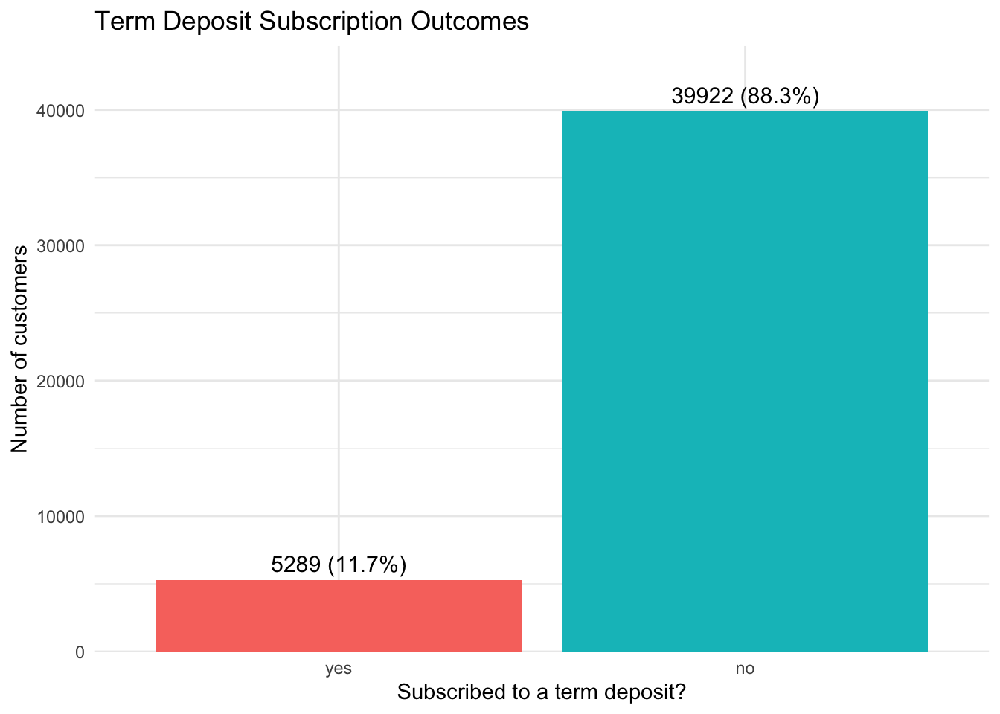

This project uses the Bank Marketing dataset to predict whether a customer subscribes to a term deposit after being contacted during a marketing campaign by a Portuguese banking institution. The response variable, y, records subscription status (yes or no). Customer demographics, financial information, and marketing contact characteristics provide possible predictors.
The data were used in ST 558 Project 2 and originate from the Kaggle Banking Dataset (Marketing Targets), based on the UCI Bank Marketing dataset. The original training and testing files from Kaggle were combined and duplicate rows removed in Project 2. A new training/test split will be created for this final project; the original Kaggle split is not used for model evaluation.
Our goal is to compare a classification tree and a random forest using the tidymodels framework, select the better-performing model on a held-out test set, and make predictions available through an API.
Data Loading & Preprocessing
library(tidyverse)
── Attaching core tidyverse packages ──────────────────────── tidyverse 2.0.0 ──
✔ dplyr 1.2.1 ✔ readr 2.2.0
✔ forcats 1.0.1 ✔ stringr 1.6.0
✔ ggplot2 4.0.3 ✔ tibble 3.3.1
✔ lubridate 1.9.5 ✔ tidyr 1.3.2
✔ purrr 1.2.2
── Conflicts ────────────────────────────────────────── tidyverse_conflicts() ──
✖ dplyr::filter() masks stats::filter()
✖ dplyr::lag() masks stats::lag()
ℹ Use the conflicted package (<http://conflicted.r-lib.org/>) to force all conflicts to become errors
# Read the cleaned dataset created for Project 2bank_data <-read_csv("Dataset/bank_clean.csv", show_col_types =FALSE)# Convert categorical columns (including the response) to facotrs)categorical_vars <-c("job", "marital", "education", "default", "housing", "loan","contact", "month", "poutcome", "y")bank_data <- bank_data |>mutate(across(all_of(categorical_vars), as.factor))# Put `yes` first so later classification metrics can treat it as the eventbank_data <- bank_data |>mutate(y =factor(y, levels =c("yes", "no")))
The cleaned dataset contains 45211 observations and 17 variables. Numeric variables include customer age, account balance, and campaign contact measures; categorical variables include job, education, housing loan status, and the response.
Dataset dimensions and variable types
tibble(Variable =names(bank_data),Type =vapply(bank_data, function(x) class(x)[1], character(1))) |>kable(caption ="Variables and their data types")
The value unknown appears in some categorical variables and is retained as a category rather than automatically treated as missing. The duplicate count above verifies whether any identical records remain in the cleaned dataset.
Exploratory Analaysis of the Response
Term deposit subscription frequencies
subscription_summary <- bank_data |>count(y, name ="Frequency") |>mutate(Percentage =round(100* Frequency /sum(Frequency), 2))subscription_summary |>kable(caption ="Term deposit subscription frequencies")
Term deposit subscription frequencies
y
Frequency
Percentage
yes
5289
11.7
no
39922
88.3
subscription_summary |>ggplot(aes(x = y, y = Frequency, fill = y)) +geom_col(show.legend =FALSE) +geom_text(aes(label =paste0(Frequency, " (", Percentage, "%)")),vjust =-0.5,size =4 ) +scale_y_continuous(expand =expansion(mult =c(0, 0.12)) ) +labs(title ="Term Deposit Subscription Outcomes",x ="Subscribed to a term deposit?",y ="Number of customers" ) +theme_minimal()

The subscription distribution helps us understand the relative frequency of yes and no outcomes. This is important when selecting an appropriate performance metric for the classification models in later sections.
Next Steps
In the next stage, we will create a reproducible 70% training / 30% testing split and five-fold cross-validation folds. We will then specify and tune a classification tree and a random forest, compare their test-set performance, and refit the selected model to the full dataset for the API.
Modeling Setup
Training and testing split
We use a reproducible 70% training / 30% testing split, stratified by the subscription outcome y. Stratification helps maintain similar proportions of subscribes and non-subscribers in both sets. The test set will be reserved for the final comparison of the tuned models.
bind_rows( bank_train |>count(y) |>mutate(Dataset ="Training"), bank_test |>count(y) |>mutate(Dataset ="Testing"),) |>group_by(Dataset) |>mutate(Percentage =round(100* n /sum(n), 2)) |>ungroup() |>select(Dataset, y, Frequency = n, Percentage) |>kable(caption ="Response distribution in the training and testing sets")
Response distribution in the training and testing sets
Dataset
y
Frequency
Percentage
Training
yes
3702
11.7
Training
no
27945
88.3
Testing
yes
1587
11.7
Testing
no
11977
88.3
Five-fold cross-validation
Cross-validation uses only the training data. In each fold, a model is trained on four-fifths of the training observations and validated on the remaining fifth. We stratify the folds by y to maintain class balance.
set.seed(558)bank_folds <-vfold_cv(bank_train, v =5, strata = y)bank_folds
Both models will use the same predictors. The recipe accounts for previously unseen categorical levels and removes predictors with zero variance. We do not normalize numeric variables or create dummy variables because our planned tree and random forest models can work directly with numeric and factor predictors.
bank_recipe <-recipe(y ~. , data = bank_train) |>step_novel(all_nominal_predictors()) |>step_zv(all_predictors())bank_recipe
Next, we will define a clasification tree, construct a custom hyperparameter grid, tune it using these five cross-validation folds, and select the best settings using an appropriate classification metric.
Classification Tree Model
Model specification and tuning grid
A classification tree predicts term deposit subscription by repeatedly splitting customers into groups based on predictor values. We tune three parameters: cost_complexity controls pruning, tree_depth limits the number of splits along a path, and min_n controls the minimum number of observations needed to attempt a split.
# Classification tree modeltree_spec <-decision_tree(cost_complexity =tune(),tree_depth =tune(),min_n =tune()) |>set_engine("rpart") |>set_mode("classification")# Workflow with preprocessing recipetree_wf <-workflow() |>add_recipe(bank_recipe) |>add_model(tree_spec)# Custom grid: 3 x 3 x 3 = 27 combinationstree_grid <-grid_regular(cost_complexity(range =c(-4, -1)),tree_depth(range =c(2L, 12L)),min_n(range =c(5L, 30L)),levels =3)tree_grid
We evaluate the candidate trees with ROC AUC, sensitivity, and specificity. Because yes is the first level of y, these metrics treat subscription as the event of interest. ROC AUC is the primary selection metric because the response classes are imbalanced.
final_tree_wf <-finalize_workflow(tree_wf, best_tree)# Fit on training data onlyfinal_tree_fit <-fit(final_tree_wf, data = bank_train)show_best(tree_tune, metric ="roc_auc", n =1) |>kable(digits =4,caption ="Best cross-validated classifcation tree" )
Best cross-validated classifcation tree
cost_complexity
tree_depth
min_n
.metric
.estimator
mean
n
std_err
.config
1e-04
12
30
roc_auc
binary
0.8923
5
0.0029
pre0_mod09_post0
The table above reports the best tree’s cross-validated ROC AUC and tuning parameters. A high ROC AUC indications better discrimination between subscribes and non-subscribers across classification thresholds.
Next Steps
Next, we will tune a random forest using the same training data and cross-validation folds, then compare both models on the held-out test set.